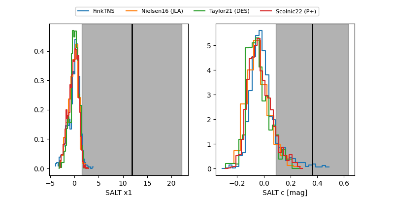

FINK: ZTF25abqksoy
Lasair: ZTF25abqksoy
ALeRCE: ZTF25abqksoy
ZTF25abqksoy (ztf,fink)
equatorial (ra, dec) = (347.5923,+34.49441)
galactic (l, b) = (100.3019,-23.89735)

last ztfr=20.25
3 ztfr detections